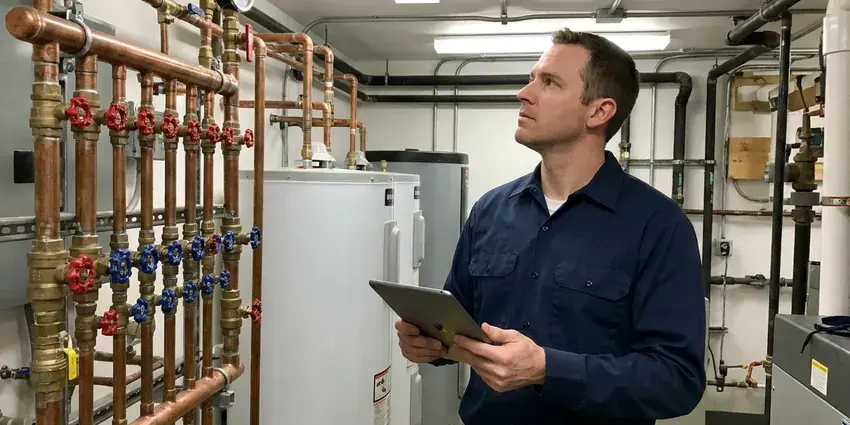

Drains Camera Inspection in Lauderhill, FL
Planning a remodel in Lauderhill, FL? Scope the drains before the new floor goes in.
- Licensed Plumbers
- Video You Can Share
- Same Day Camera Visits
- Location and Depth Readings
Get the Sewer Scoped Before You Buy in Lauderhill, FL
We locate any defect from above, so a repair crew knows exactly where to dig and how deep.
Drain Camera Inspection That Shows You the Problem in Lauderhill, FL
HDF Plumbing scopes drain and sewer lines for homes and businesses in Lauderhill, FL. We do not dig to look. The camera enters through a cleanout, a toilet flange or a roof vent, and the recording shows roots, cracks, bellies and offset joints along with the footage counter so each one has an exact distance.
Some of what we do:
- Post-jetting and after-repair verification
- Pre-purchase sewer scopes for buyers
- Root intrusion and cracked joint identification

Additional Plumbing Maintenance Services in Lauderhill, FL
Our maintenance and specialty plumbing services in Lauderhill, FL catch small problems before they become emergencies.




Lauderhill commercial plumbing specialists

Customers
Why Choose HDF Plumbing for Drains Camera Inspection in Lauderhill, FL?
Our techs have reviewed thousands of feet of pipe footage. They know what matters. A thin line of scale is not a crack, and a slight sag that holds an inch of water is not the same as a belly that traps waste every week, so the findings you get are sorted by what actually needs attention.
- You Keep the Video, Every inspection comes with a copy of the recording.
- Plain Explanations, We walk you through each finding in plain language while the footage plays.
- Upfront Pricing, The cost is set before we start.
Citywide Coverage
No matter where you are in Lauderhill, booking a scope is quick. Weekends sometimes too. We schedule by area, so we can fit time-sensitive scopes in fast.
Experienced Team
The HDF Plumbing crew explains findings in plain language. Simple terms only. They pause the footage on anything worth noting, tell you what it is, how serious it looks and what the realistic options are, including doing nothing.
Safety-First Approach
Locating marks go down with paint or flags that wash away. No permanent marks. If a mark needs to stay visible for a repair crew, we use lawn flags that hold up.
Trusted Certified Lauderhill Plumbing Services Professionals
At HDF Plumbing, we take pride in licensed, certified plumbing services throughout Lauderhill, FL. Those papers on the wall mean something. Every repair, install and maintenance visit follows strict safety and quality rules, and the plumbers doing the work carry recognized industry credentials.
Call Us Now PHCC Plumbing Contractor Recognition
PHCC Plumbing Contractor Recognition Better Business Bureau (BBB) Accreditation
Better Business Bureau (BBB) Accreditation Angi Certified Pro
Angi Certified Pro ISO 9001 Quality Management Certification
ISO 9001 Quality Management CertificationCamera Inspections We Run in Lauderhill, FL
Post-Repair Inspection in Lauderhill
A new section of pipe should be straight, sealed and sloped correctly. The camera proves it. After a repair in Lauderhill, we scope the new pipe and its connections to make sure everything lined up. You keep the footage as a record.

Commercial Drain Camera Services in Lauderhill
Commercial drains in Lauderhill take a beating. Grease lines are the worst. We scope restaurant grease lines, apartment mains and office lines, often after closing. The footage goes to the property manager.
Camera Inspection Cost vs. Exploratory Digging in Lauderhill, FL
A camera inspection usually costs a few hundred dollars. Digging costs much more. Without a camera, a crew may open two or three holes trying to find a break that the camera and locator would have pinned to one spot within a foot. With footage and a mark on the ground, the excavation stays small. Less lawn gets torn up.
Post-Repair and Post-Jetting Verification in Lauderhill
Once roots are cut, a line is jetted or a section is repaired, a follow-up camera pass shows the result. The before and after speak for themselves. The footage confirms that roots are gone, grease is off the walls and any new section is aligned and sealed, which gives you a record for future reference or a warranty claim. Landlords often want this.
Post-Repair Drain Inspections in Lauderhill
Any repair or cleaning in Lauderhill can get a follow-up camera pass from HDF Plumbing. It confirms the result. You see that the blockage is gone, the new section is aligned with the old pipe and no joints were knocked loose during the work around it. Landlords and warranty providers often ask for this.
Hydro-Jetting Pre-Inspection in Lauderhill, FL
Jetting a cracked or collapsing pipe can make it worse. So we look first. A quick scope in Lauderhill, FL shows whether the pipe walls are solid enough to handle thousands of psi or whether a gentler cleaning and a repair plan make more sense. It takes about 20 minutes.
Camera Inspection for Slab Leaks and Under-Slab Drains in Lauderhill, FL
Newer homes across Florida mostly use PEX or CPVC with PVC drains, though copper pinhole leaks are still a frequent repair in older homes. Drains under a slab cannot be seen. Cracks there leak into the soil. A camera shows exactly where an under-slab drain has cracked or separated, and the locate keeps the cut in the floor small. Sometimes a reroute is cheaper.

Residential Drain Camera Inspection in Lauderhill
Kitchen, bath and laundry lines inside the house get a smaller camera head. Branch lines are tight. We can follow a 1 1/2 inch line through its bends, check the slope and find any low spots or broken fittings. It explains a lot of slow drains.
Local Sewer Camera Service in Lauderhill, FL
We come back too. Follow-up scopes are easy to schedule. After a repair or a jetting, the same crew can verify the work on video.
Close by means fast answers. Nobody likes waiting on a diagnosis. When a line is backed up, we clear it and scope it in the same trip.
HDF Plumbing at a Glance
- Fully licensed plumbing team covering Lauderhill, FL
- Same-day appointments and 24/7 emergency response
- Clear written estimates, no hidden fees
- 4.9-star rated by 739+ Florida customers
Lauderhill Map
Lauderhill Information
- Population
- 73,974
- Area codes
- 754/954/561
- Service area
- Lauderhill and towns within a 40 mile drive
- Nearby
- Sunrise, Tamarac, Fort Lauderdale, Margate
Newer homes across Florida mostly use PEX or CPVC with PVC drains, though copper pinhole leaks are still a frequent repair in older homes. Sewer lines that run through yards with big trees take damage nobody can see, so a camera is the fastest way to know what is down there in Lauderhill, FL.
Talk to a Plumber
Call HDF Plumbing for honest, reliable plumbing from people who know the trade in Lauderhill, FL.
Our Specialized Plumbing Services in Lauderhill, FL
At HDF Plumbing, we handle the full list of plumbing services across Lauderhill, FL. We go from leak detection all the way to full system installations, for homes and commercial buildings, and we do it quickly at a fair price. Take a look at our core services below:


From Cleanout to Recorded Video in Lauderhill, FL
The steps are simple so you know what we are looking at and what it costs.
Tell Us the Reason
Call (904) 925-7356 and say whether you need a sewer scope, a drain diagnosis or a pre-purchase inspection. We confirm the price on the call.
Run the Camera
We insert the camera through a cleanout or fixture and record the full run. Defects get marked on the surface.
Review the Footage
We walk you through the video in plain language. You keep the recording.
Frequently Asked Questions About Drains Camera Inspection in Lauderhill
Expect $250 to $600 for most inspections. Some cost less. The price depends on how long the line is, how easy it is to reach and whether we need to clear a blockage before the camera can travel the full run. We give you a clear quote up front.
No, it needs open pipe. A full clog stops it. When the line is blocked, we open it first and then inspect, which shows the cause. Both can happen on one visit.
We clear it. The camera goes back in after. Depending on what it is, we cut roots with a sewer machine, jet out grease and scale, or remove a foreign object, and the second camera pass shows what caused the clog in the first place. You get options if the pipe is damaged.
No permit is needed. Looking does not need one. A permit only comes into play in Lauderhill, FL if the camera finds a problem that needs repair, like a pipe replacement or a dig. We tell you if that applies.
Clogs that keep coming back. It is the most common reason. Slow drains in several fixtures, sewer odors and gurgling are also strong signs. Older Lauderhill homes with big trees are worth scoping even without symptoms.
Yes, especially for older homes. Clay and cast iron are the worry. Limestone bedrock and sinkhole activity in some areas can shift the ground and crack buried water and sewer lines. A scope costs a few hundred dollars, and the repair it might reveal costs far more.
We stand behind our footage and locating marks. It shows what it shows. If a repair we recommend uncovers something different from our report, we work with you to make it right, whether that means adjusting the scope of the repair or the price. That has rarely come up.
No. It does not harm the pipe. The head is pushed slowly through the line on a flexible cable, through openings that are already there. Even fragile clay pipe handles it fine.
What Our Customers Say About Our Plumbing Experts

Patricia H.
We had a slab leak that two other companies could not find. HDF Plumbing located it in under an hour with a listening device. They rerouted the line through the attic instead of breaking up the floor, so we kept our kitchen tile.
Slab Leak Repair · Lauderhill, FL
Daniel K.
A pipe burst in the garage ceiling at 11 at night. Someone answered on the second ring, and the plumber was in my driveway about fifty minutes later. He shut off the main, cut out the split section, and had water back on before 2 am.
Emergency Plumbing · Lauderhill, FLTyler J.
We bought a taller comfort height toilet for my dad, who just had knee surgery. The plumber pulled the old one, found the flange was cracked, and replaced it before setting the new bowl. Took about two hours.
Toilet Installation · Margate, FLAngela D.
Our sump pump quit during a storm and the water was an inch from the basement carpet. HDF Plumbing put in a new pump with a battery backup that same evening. We have had two heavy rains since. It kicked on both times.
Sump Pump · Tamarac, FLRachel N.
Hard water was leaving white crust on every faucet and our dishwasher was struggling. The tech tested the water, recommended a softener sized for a family of five, and installed it with a bypass valve in one afternoon. The spots on our glasses are gone.
Water Softener · Davie, FL
Mark T.
The floor drain in our office break room backed up every few weeks. The plumber ran a cable, then put a camera down and found roots at a joint about thirty feet out. Seeing it on the screen made the decision easy.
Drain Cleaning · Sunrise, FL